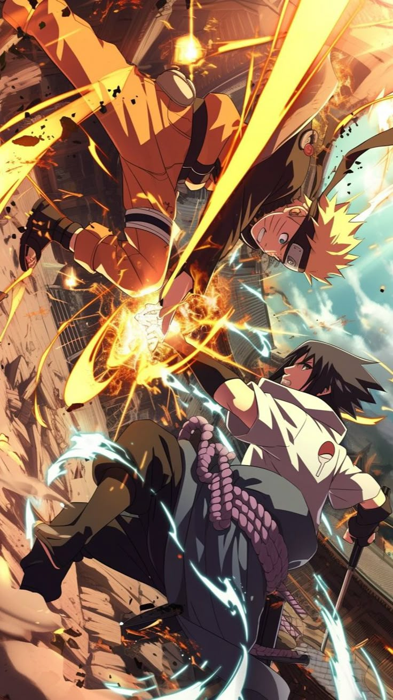
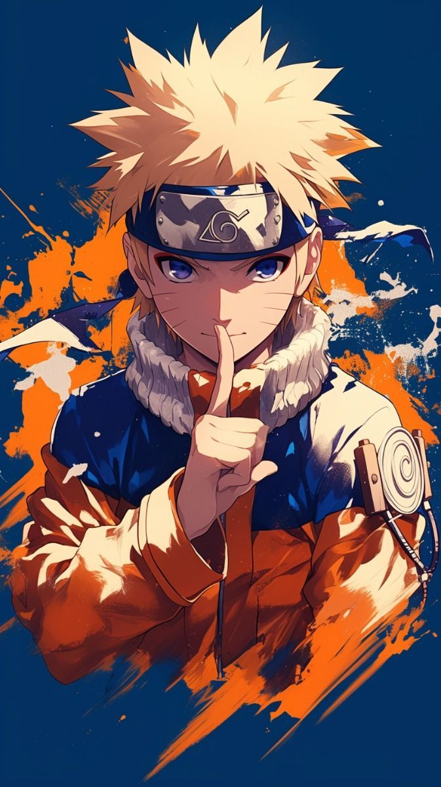
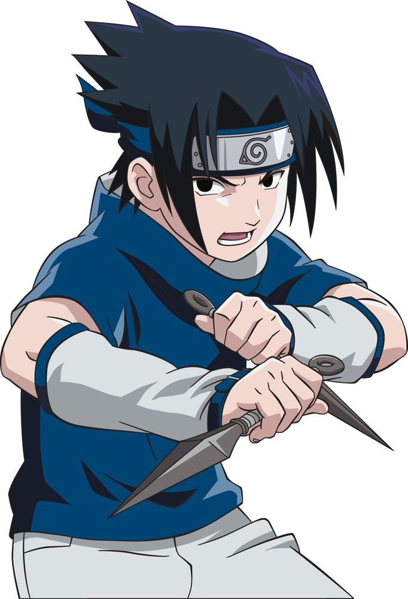

"Nunca rendirse, nunca volver a tu palabra. Ese es mi camino ninja."
Comienza tu entrenamientoMaestros del Sharingan y el elemento fuego. Un linaje de genios bendecidos y maldecidos por un poder inmenso.
Ver más >Famosos por su fuerza vital inmensa, grandes reservas de chakra y maestría en técnicas de sellado.
Ver más >Guardianes del Byakugan y maestros del estilo de combate Jūken, golpeando los puntos de chakra.
Ver más >Un clan legendario, conocido por su "Voluntad de Fuego" y sus poderosas habilidades ninja.
Ver más >
De un marginado a un héroe, Naruto demostró que con esfuerzo y la "Voluntad de Fuego", cualquier sueño es posible. Su espíritu indomable inspiró a una nación entera.
Conoce a Naruto >Marcado por la tragedia de su clan, Sasuke buscó la venganza a cualquier costo. Su camino oscuro y redención son un pilar central de la saga.
Conoce a Sasuke >
Los ninjas más peligrosos y buscados. Sus anillos, sus motivos y el impacto que tuvieron en el mundo ninja.
El genio trágico del Sharingan. Anillo: "Escarlata".
Líder de Akatsuki, poseedor del Rinnegan. Anillo: "Cero".
Artista explosivo obsesionado con el arte. Anillo: "Azul".